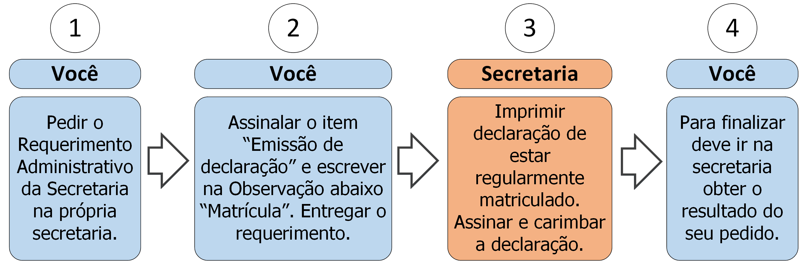

4.1 Declaração de Regularmente Matrículado

4.1.1 Descrição
A qualquer momento você pode solicitar uma declaração de que está regularmente matriculado no curso. Para isso deve seguir os seguintes passos:
- A. Peça o Requerimento Administrativo da Secretaria;
- B. Assinale o item “Emissão de declaração” e preencha no campo Observação: “Matrícula”. Nela constará, por padrão, apenas seu nome, matrícula, período e curso. Caso sejam necessárias informações específicas (ex.: prazo de conclusão de curso, CNPJ da instituição, estágios que já realizou, etc.) indique neste mesmo campo de observação;
- C. Entregue o requerimento;
- D. A secretaria confeccionará e imprimirá a declaração;
- E. A secretaria carimbará e assinará a declaração;
- F. Vá à secretaria e procure saber sobre o resultado do seu requerimento (ver regra 1 na seção 4.1.3).
4.1.2 Documentos necessários
Nenhum.
4.1.3 Regras
- 1. Prazo de efetivação: A Secretaria tem até 5 dias úteis para emitir a declaração de matrícula no curso.